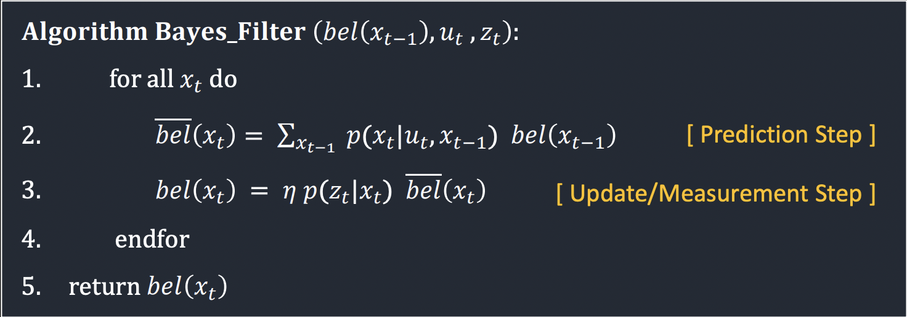
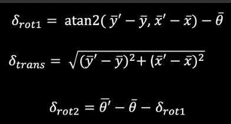

Lab 10 Grid Localization using Bayes Filter
The purpose of this lab was to implement grid localization on a simulator using the Bayes Filter. We used a simulator to mimic the behvaior of the robot as it moves through a map on a jupyter notebook.
Pre Lab
When implementing localization, we want to determine the location of the robot with respect to the environment. This is when we can use a Bayes Filter to use the robot's knowledge of its control inputs and uses the observation data in addition to localize the robot.
The Bayes Filter will calculate the belief that the robot exists in a potentially infinite number of positions. To do this, we have discretized our map to be (12,9,18) for x, y and theta. Each value within the map corresponds to the robot location and its orientation as wel as the probability of it being there.

Each square in our grid is of size (0.3048 m, 0.3048 m, 20 degrees). This reduces the number of positions that the Bayes Filter has to consider and speeds up our running time significantly which is good.
IMPLEMENTATION: Compute Control
The compute control function - as seen below - is responsible for outputting u (the control input) based on a current position and previous position. These were found using the equations in lecture.

IMPLEMENTATION: Odometry Model
This function is responsible for calculating the probability of the state transition. We want to find the probability that the robot has reached a position given the previous position and the control inputs. This likelihood is calculated using a gaussian distribution done upon the robot's expected movement and the previous position. This is basically doing the P(x' | x, u) from the image above.
IMPLEMENTATION: Prediction Step
This is where the actual predictions occur of the Bayes Filter. Based on the current and previous outputs from the Odometry model, the bel_bar probability is updated. With our map being discretized into 12*9*18 = 1944 potential states, we will loop through each possible state and calculate the likelihood of being in this state. However, we also want to add a threshold on it to ignore the locations that the robot is extremely unlikely to be at - so greater than 0.0001.
IMPLEMENTATION: Sensor Model
This is the equivalent of p(z|x), which is the probaility that a robot measures some specified distance based on what it should have measured from the current angle and position. This has 18 potential probabilities because there are 18 different values that the robot measures distance at.
IMPLEMENTATION: Update Step
This is where the actual model is being updated - in our case it would be the sensor model. It returns the belief of the robot based on the past sensor measurements by looping through all possible positions and comparing the known measurements to the actual measurements of teh sesnor of the current position. The update is then done by multiplying P(z|x) by the predicted belief loc.bel_bar found during the prediction step.